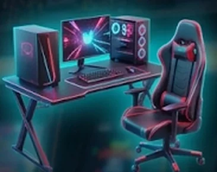

Participantes
● 128 na live- VE verongamer
- DA davigamer
- LI gamerlilia
- DM damingamer
- VK viktav23
- BH bhabela132
- NA nandaplays
+ 121 participantes
SORTEADOR ATIVO
verongamer
davigamer
gamerlilia
damingamer
viktav23
bhabela132
nandaplays
caiocodes
jujubits
teteu.dev
mari404
pixelzé
Iniciar Sorteio
Prêmio do dia

Set Gamer
- 1 vencedor
- sem repetição
- chances iguais